X2¶
CENTROID
centroid(A, B, C) -> X_2 • Archimedes Equilibriums I.14 • Kimberling X(2) • Search Value \((6, 9, 13)\): \(\frac{4 \sqrt{35}}{9} \approx 2.629368792489\)
L is the average of the distances from A, B, C to L. An idealized triangular sheet balances atop a pin head located at X2 and also balances atop any knife-edge that passes through X2. The triangles BXC, CXA, AXB have equal areas if and only if X = X2.X2 (CENTROID) constructed at X2 = \(\left(\frac{19}{3},\; 4\right)\) in exact rational coordinates on the Heronian reference triangle \((a, b, c) = (15, 13, 14)\) over \(\mathbb{Q}\) with vertices A = \((0, 0)\), B = \((14, 0)\), C = \((5, 12)\), and area \(\Delta = 84\). Switch tabs above to inspect exact constructions on Right \((3, 4, 5)\), Kepler \((1, \sqrt{\phi}, \phi)\), and Kimberling \((6, 9, 13)\).¶
Constructed Elements
Derived Triangle: Medial Triangle △MaMbMc — vertices Ma, Mb, Mc (Formed by the midpoints of sides BC, CA, AB)
Concurrence Lines: A–Ma, B–Mb, C–Mc concurring at X2
Homogeneous Coordinates & Exact Invariants¶

Homogeneous Coordinates of X2 on Heronian \((15, 13, 14)\): orthogonal trilinear struts \((\alpha, \beta, \gamma)\) and signed barycentric sub-triangles \((\Delta_a, \Delta_b, \Delta_c)\).¶
Trilinear Coordinates (\(\alpha : \beta : \gamma = 182 : 210 : 195\)): Dropping orthogonal perpendiculars X2Ta, X2Tb, and X2Tc from X2 to sidelines BC, CA, and AB meets the sides at right-spread pedal feet Ta = \(\left(\frac{233}{25},\; \frac{156}{25}\right)\), Tb = \(\left(\frac{1195}{507},\; \frac{956}{169}\right)\), and Tc = \(\left(\frac{19}{3},\; 0\right)\). The orthogonal strut lengths on \((15, 13, 14)\) are \(d_a = \frac{56}{15}\), \(d_b = \frac{56}{13}\), and \(d_c = 4\), reducing to homogeneous trilinears \(\alpha : \beta : \gamma = 182 : 210 : 195\).
Barycentric Coordinates (\(u : v : w = 1 : 1 : 1\)): Joining X2 to the vertices along X2A, X2B, and X2C forms signed sub-triangles △X2BC, △X2CA, and △X2AB of exact signed areas \(\Delta_a = 28\), \(\Delta_b = 28\), and \(\Delta_c = 28\) (summing to \(\Delta_a + \Delta_b + \Delta_c = 84 = \Delta\)), in homogeneous ratio \(u : v : w = 1 : 1 : 1\).
Reference Triangle |
Field |
Cartesian \((x, y)\) |
Trilinears \(\alpha : \beta : \gamma\) |
Barycentrics \(u : v : w\) |
Sub-Areas \((\Delta_a, \Delta_b, \Delta_c)\) |
Directed Trilinear \((d_a,\, Q_a)\) |
|---|---|---|---|---|---|---|
Heronian \((15, 13, 14)\) |
\(\mathbb{Q}\) |
\(\left(\frac{19}{3},\; 4\right)\) |
\(182 : 210 : 195\) |
\(1 : 1 : 1\) |
\(\left(28,\; 28,\; 28\right)\) |
\(\frac{56}{15}\; (Q_a = \frac{3136}{225})\) |
Right \((3, 4, 5)\) |
\(\mathbb{Q}\) |
\(\left(\frac{41}{15},\; \frac{4}{5}\right)\) |
\(20 : 15 : 12\) |
\(1 : 1 : 1\) |
\(\left(2,\; 2,\; 2\right)\) |
\(\frac{4}{3}\; (Q_a = \frac{16}{9})\) |
Kepler \((1, \sqrt{\phi}, \phi)\) |
\(\mathbb{Q}(\sqrt{\phi})\) |
\(\left(\frac{\phi}{3} + \frac{1}{3},\; \frac{\sqrt{\phi} \left(\phi - 1\right)}{3}\right)\) |
\(1 : \sqrt{\phi} \left(\phi - 1\right) : \phi - 1\) |
\(1 : 1 : 1\) |
\(\left(\frac{\sqrt{\phi}}{6},\; \frac{\sqrt{\phi}}{6},\; \frac{\sqrt{\phi}}{6}\right)\) |
\(\frac{\sqrt{\phi}}{3}\; (Q_a = \frac{\phi}{9})\) |
Kimberling \((6, 9, 13)\) |
\(\mathbb{Q}(\sqrt{35})\) |
\(\left(\frac{92}{13},\; \frac{8 \sqrt{35}}{39}\right)\) |
\(39 : 26 : 18\) |
\(1 : 1 : 1\) |
\(\left(\frac{4 \sqrt{35}}{3},\; \frac{4 \sqrt{35}}{3},\; \frac{4 \sqrt{35}}{3}\right)\) |
\(\frac{4 \sqrt{35}}{9}\; (Q_a = \frac{560}{81})\) |
Alternate Coordinates8 forms
Trilinears: \(bc : ca : ab\)
Trilinears: \(\csc A : \csc B : \csc C\)
Trilinears: \(\cos A + \cos B \cos C : \cos B + \cos C \cos A : \cos C + \cos A \cos B\)
Trilinears: \(\sec A + \sec B \sec C : \sec B + \sec C \sec A : \sec C + \sec A \sec B\)
Trilinears: \(\cos A + \cos(B - C) : \cos B + \cos(C - A) : \cos C + \cos(A - B)\)
Trilinears: \(\cos B \cos C - \cos(B - C) : \cos C \cos A - \cos(C - A) : \cos A \cos B - \cos(A - B)\)
Trilinears: \(\tan(A/2) + \cot(A/2) : :\)
Trilinears: \(1 + \csc A/2 \sin B/2 \sin C/2 : :\)
Incident Central Lines¶
Principal Central Lines Through X2 on Heronian \((15, 13, 14)\).¶
Euler Line {2, 3, 4, 5} — collinear axis through X2, X3 (Circumcenter, \(\left(7,\; \frac{33}{8}\right)\)), X4 (Orthocenter, \(\left(5,\; \frac{15}{4}\right)\)), X5 (Nine-Point Center, \(\left(6,\; \frac{63}{16}\right)\)), with exact Cartesian equation \(3 x - 16 y + 45 = 0\) (spread \(\frac{9}{265}\) relative to AB).
Nagel Line {1, 2, 8, 10} — collinear axis through X1 (Incenter, \(\left(6,\; 4\right)\)), X2, X8 (Nagel Point, \(\left(7,\; 4\right)\)), X10 (Spieker Center, \(\left(\frac{13}{2},\; 4\right)\)), with exact Cartesian equation \(y - 4 = 0\) (spread \(0\), parallel to baseline AB).
Gergonne–Centroid–Mittenpunkt Line {2, 7, 9} — collinear axis through X2, X7 (Gergonne Point, \(\left(\frac{414}{73},\; \frac{288}{73}\right)\)), X9 (Mittenpunkt, \(\left(\frac{973}{146},\; \frac{294}{73}\right)\)), with exact Cartesian equation \(12 x - 145 y + 504 = 0\) (spread \(\frac{144}{21169}\) relative to AB).
Symmedian Point–Symmedian Point Of The Anticomplementary Triangle Central Line {2, 6, 69} — collinear axis through X2, X6 (Symmedian Point, \(\left(\frac{1673}{295},\; \frac{1176}{295}\right)\)), X69 (Symmedian Point Of The Anticomplementary Triangle, \(\left(\frac{2259}{295},\; \frac{1188}{295}\right)\)), with exact Cartesian equation \(6 x - 293 y + 1134 = 0\) (spread \(\frac{36}{85885}\) relative to AB).
Feuerbach Point–Insimilicenter(Circumcircle, Incircle) Central Line {2, 11, 55} — collinear axis through X2, X11 (Feuerbach Point, \(\left(6,\; 8\right)\)), X55 (Insimilicenter(Circumcircle, Incircle), \(\left(\frac{614}{97},\; \frac{392}{97}\right)\)), with exact Cartesian equation \(12 x + y - 80 = 0\) (spread \(\frac{144}{145}\) relative to AB).
X2 lies on the Parry circle, Lucas cubic, Thomson cubic.
Full Incident Central Line Catalog162 lines
{1, 8}, {3, 4}, {6, 69}, {7, 9}, {11, 55}, {12, 56}, {13, 16}, {14, 15}, {17, 62}, {18, 61}, {19, 534}, {31, 171}, {32, 83}, {33, 1040}, {34, 1038}, {35, 1479}, {36, 535}, {37, 75}, {38, 244}, {39, 76}, {40, 946}, {44, 89}, {45, 88}, {51, 262}, {52, 1216}, {54, 68}, {58, 540}, {65, 959}, {66, 206}, {71, 1246}, {72, 942}, {74, 113}, {77, 189}, {80, 214}, {85, 241}, {92, 273}, {94, 300}, {95, 97}, {98, 110}, {99, 111}, {101, 116}, {102, 117}, {103, 118}, {104, 119}, {106, 121}, {107, 122}, {108, 123}, {109, 124}, {112, 127}, {128, 1141}, {129, 1298}, {130, 1303}, {131, 1300}, {133, 1294}, {136, 925}, {137, 930}, {154, 1503}, {165, 516}, {169, 1763}, {174, 236}, {176, 1659}, {178, 188}, {187, 316}, {196, 653}, {201, 1393}, {210, 354}, {216, 232}, {220, 1170}, {222, 651}, {231, 1273}, {242, 1851}, {243, 1857}, {252, 1166}, {253, 1073}, {254, 847}, {257, 1432}, {261, 593}, {265, 1511}, {271, 1034}, {272, 284}, {280, 318}, {283, 580}, {290, 327}, {292, 334}, {294, 949}, {308, 702}, {311, 570}, {314, 941}, {319, 1100}, {322, 1108}, {330, 1107}, {341, 1219}, {351, 804}, {355, 944}, {360, 1115}, {366, 367}, {371, 486}, {372, 485}, {392, 517}, {476, 842}, {480, 1223}, {489, 1132}, {490, 1131}, {495, 956}, {496, 1058}, {514, 1022}, {523, 1649}, {525, 1640}, {561, 716}, {568, 1154}, {572, 1746}, {573, 1730}, {578, 1092}, {585, 1336}, {586, 1123}, {588, 1504}, {589, 1505}, {594, 1255}, {647, 850}, {648, 1494}, {650, 693}, {664, 1121}, {668, 1015}, {670, 1084}, {689, 733}, {743, 789}, {799, 873}, {812, 1635}, {846, 1054}, {914, 1442}, {918, 1638}, {927, 1566}, {954, 1260}, {1073, 1249}, {968, 1738}, {1000, 1145}, {1043, 1834}, {1060, 1870}, {1074, 1785}, {1076, 1838}, {1089, 1224}, {1093, 1217}, {1124, 1378}, {1143, 1489}, {1155, 1836}, {1171, 1509}, {1186, 1207}, {1257, 1265}, {1284, 1403}, {1335, 1377}, {1340, 1349}, {1341, 1348}, {1500, 1574}, {1501, 1691}, {1672, 1681}, {1673, 1680}, {1674, 1679}, {1675, 1678}, {1697, 1706}, {3343, 3344}, {3349, 3350}, {3351, 3352}
Functional Relations & Conjugates¶
Conjugate & Homothetic Partners of X2 on Heronian \((15, 13, 14)\).¶
Isogonal Conjugate: X6 (Symmedian Point, homogeneous barycentrics \(225 : 169 : 196\)) at \(\left(\frac{1673}{295},\; \frac{1176}{295}\right)\), joined along {2, 6} (isogonal conjugate via \(a^2 vw : b^2 wu : c^2 uv\)).
Self-Isotomic Fixed Point: X2 is its own isotomic conjugate (\(1 : 1 : 1\)), acting as the identity element of barycentric multiplication.
Homothetic Center of Complement & Anticomplement: X2 is the fixed homothetic center for both complement (factor \(-\frac{1}{2}\)) and anticomplement (factor \(-2\)) dilations.
Circumcircle Inverse: Inversion in circumcircle centered at X3 = \(\left(7, \frac{33}{8}\right)\) (\(Q_R = \frac{4225}{64}\)) maps X2 along {2, 3} (\(Q(X2, X3) = \frac{265}{576}\), scale \(Q_R / Q = \frac{7605}{53}\)) to X23 (Far-Out Point) at \(\left(- \frac{4699}{53},\; - \frac{732}{53}\right)\).
Full Functional Relations Catalog142 relations
X2 = midpoint of Xi and Xj for these (i,j): {1, 3679}, {3, 381}, {4, 376}, {5, 549}, {6, 599}, {7, 6172}, {8, 3241}, {9, 6173}, {10, 551}, {11, 6174}, {13, 5463}, {14, 5464}, {20, 3543}, {21, 6175}, {32, 7818}, {37, 4688}, {39, 9466}, {51, 3917}, {69, 1992}, {75, 4664}, {76, 7757}, {98, 6054}, {99, 671}, {110, 9140}, {114, 6055}, {115, 2482}, {125, 5642}, {126, 9172}, {140, 547}, {141, 597}, {148, 8591}, {154, 1853}, {165, 1699}, {190, 903}, {192, 4740}, {210, 354}, {329, 2094}, {351, 9148}, {355, 3655}, {373, 5650}, {384, 7924}, {385, 7840}, {392, 3753}, {428, 7667}, {591, 1991}, {618, 5459}, {619, 5460}, {620, 5461}, {631, 5071}, {648, 1494}, {664, 1121}, {668, 3227}, {670, 3228}, {858, 7426}, {1003, 7841}, {1086, 4370}, {1125, 3828}, {1635, 4728}, {1638, 1639}, {1641, 1648}, {1644, 1647}, {1649, 8371}, {1650, 1651}, {2454, 2455}, {2479, 2480}, {2487, 4677}, {2966, 5641}, {2976, 6161}, {2979, 3060}, {3034, 3875}, {3034, 7292}, {3251, 4162}, {3268, 9979}, {3448, 9143}, {3524, 3545}, {3534, 3830}, {3576, 5587}, {3616, 4521}, {3617, 3676}, {3623, 4468}, {3628, 10124}, {3654, 3656}, {3681, 3873}, {3739, 4755}, {3740, 3742}, {3817, 10164}, {3819, 5943}, {3845, 8703}, {3929, 4654}, {4025, 4808}, {4108, 5996}, {4120, 4750}, {4364, 10022}, {4373, 4776}, {4379, 4893}, {4430, 4661}, {4643, 4795}, {4730, 6332}, {4763, 4928}, {5054, 5055}, {5108, 9169}, {5309, 7801}, {5466, 9168}, {5485, 9741}, {5569, 8176}, {5603, 5657}, {5640, 7998}, {5692, 5902}, {5858, 5859}, {5860, 5861}, {5862, 5863}, {5883, 10176}, {5891, 9730}, {5892, 10170}, {5927, 10167}, {6032, 9829}, {6039, 6040}, {6189, 6190}, {6545, 6546}, {6656, 6661}, {6784, 6786}, {7615, 7618}, {7617, 7622}, {7734, 10128}, {7753, 7810}, {7811, 7812}, {7817, 7880}, {8010, 8011}, {8352, 8598}, {8356, 8370}, {8360, 8368}, {8597, 9855}, {8667, 9766}, {9185, 9191}, {9200, 9204}, {9201, 9205}, {9761, 9763}, {9774, 10033}, {9778, 9812}, {10162, 10163}, {10165, 10175}
X2 = reflection of Xi in Xj for these (i,j): (1, 551), (3, 549), (4, 381), (5, 547), (6, 597), (7, 6173), (8, 3679), (10, 3828), (13, 5459), (14, 5460), (20, 376), (23, 7426), (37, 4755), (51, 5943), (69, 599), (75, 4688), (76, 9466), (98, 6055), (99, 2482), (100, 6174), (110, 5642), (111, 9172), (115, 5461), (140, 10124), (144, 6172), (145, 3241), (147, 6054), (148, 671), (154, 10192), (165, 10164), (182, 10168), (190, 4370), (192, 4664), (193, 1992), (194, 7757), (210, 3740), (315, 7818), (352, 9127), (353, 10166), (354, 3742), (356, 5455), (376, 3), (381, 5), (384, 6661), (547, 3628), (549, 140), (551, 1125), (568, 5946), (597, 3589), (599, 141), (616, 5463), (617, 5464), (648, 3163), (671, 115), (903, 1086), (944, 3655), (1003, 8369), (1121, 1146), (1278, 4740), (1635, 4763), (1651, 402), (1699, 3817), (1962, 10180), (1992, 6), (2094, 57), (2475, 6175), (2479, 2454), (2480, 2455), (2482, 620), (2979, 3917), (3034, 2321), (3060, 51), (3091, 5071), (3146, 3543), (3227, 1015), (3228, 1084), (3241, 1), (3448, 9140), (3524, 5054), (3534, 8703), (3543, 4), (3545, 5055), (3576, 10165), (3617, 4521), (3623, 3676), (3655, 1385), (3676, 3616), (3679, 10), (3681, 210), (3742, 3848), (3817, 10171), (3828, 3634), (3830, 3845), (3839, 3545), (3845, 5066), (3873, 354), (3877, 392), (3917, 3819), (3929, 5325), (4240, 1651), (4363, 10022), (4370, 4422), (4430, 3873), (4440, 903), (4453, 1638), (4468, 3617), (4521, 1698), (4644, 4795), (4661, 3681), (4664, 37), (4669, 4745), (4677, 4669), (4688, 3739), (4728, 4928), (4740, 75), (4755, 4698), (4776, 3161), (4795, 4670), (4808, 3239), (4808, 8834), (5066, 10109), (5071, 1656), (5309, 7817), (5459, 6669), (5460, 6670), (5461, 6722), (5463, 618), (5464, 619), (5466, 8371), (5468, 1641), (5569, 1153), (5587, 10175), (5603, 5886), (5640, 373), (5642, 5972), (5692, 10176), (5731, 3576), (5860, 591), (5861, 1991), (5862, 5858), (5863, 5859), (5883, 3833), (5890, 9730), (5891, 10170), (5902, 5883), (5918, 10178), (5919, 10179), (5927, 10157), (5943, 6688), (6031, 9829), (6032, 10162), (6054, 114), (6055, 6036), (6161, 2505), (6172, 9), (6173, 142), (6174, 3035), (6175, 442), (6546, 10196), (6655, 7924), (6661, 7819), (6688, 10219), (6792, 9169), (7426, 468), (7615, 7617), (7618, 7622), (7620, 7615), (7622, 7619), (7671, 10177), (7757, 39), (7779, 7840), (7801, 7880), (7811, 7810), (7812, 7753), (7818, 626), (7833, 8356), (7840, 325), (7924, 6656), (7998, 5650), (8182, 5569), (8353, 8354), (8354, 8358), (8356, 8359), (8368, 8365), (8369, 8368), (8591, 99), (8596, 148), (8597, 8352), (8860, 3054), (9123, 9125), (9140, 125), (9143, 110), (9144, 5465), (9147, 351), (9168, 1649), (9172, 6719), (9185, 9189), (9263, 3227), (9466, 3934), (9485, 9123), (9730, 5892), (9778, 165), (9779, 7988), (9812, 1699), (9829, 10163), (9855, 8598), (9909, 10154), (9939, 7811), (9965, 2094), (9979, 1637), (10022, 4472), (10056, 10197), (10072, 10199), (10162, 10173), (10166, 10160), (10175, 10172)
X2 = isogonal conjugate of X6
X2 = isotomic conjugate of X2
X2 = cyclocevian conjugate of X4
X2 = Conway-circle-inverse of X38473
X2 = complement of X2
X2 = anticomplement of X2
X2 = insimilicenter of incircle and Spieker circle
X2 = insimilicenter of incircle and AC-incircle
X2 = exsimilicenter of Spieker circle and AC-incircle
X2 = insimilicenter of Conway circle and Spieker radical circle
X2 = insimilicenter of polar circle and de Longchamps circle
X2 = harmonic center of pedal circles of X13 and X14 (which are also the pedal circles of X15 and X16)
X2 = inverse-in-excircles-radical-circle of X5212
X2 = barycentric product of (real or nonreal) circumcircle intercepts of the de Longchamps line
X2 = barycentric product of circumcircle intercepts of line X325X523
X2 = barycentric product of PU(3)
X2 = barycentric product of PU(35)
X2 = harmonic center of nine-point circle and Johnson circle
X2 = pole wrt polar circle of trilinear polar of X4 (orthic axis)
X2 = excentral-to-ABC functional image of X165
X2 = excentral-to-ABC barycentric image of X165
X2 = Feuerbach-to-ABC functional image of X5947
X2 = Feuerbach-to-ABC barycentric image of X5947
X2 = perspector of orthic triangle and polar triangle of the complement of the polar circle
X2 = trilinear pole, wrt orthocentroidal triangle, of Fermat axis
X2 = trilinear pole, wrt 1st Parry triangle, of line X1499X8598
X2 = pole of Brocard axis wrt Stammler hyperbola
X2 = pole of de Longchamps line wrt the nine-point circle
X2 = pole of de Longchamps line wrt the de Longchamps circle
X2 = pole of orthic axis wrt polar circle
X2 = crosspoint of X3 and X6 wrt both the excentral and tangential triangles
X2 = intersection of tangents at X1 and X9 to the hyperbola passing through X1, X9 and the excenters (the Jerabek hyperbola of the excentral triangle)
X2 = perspector of pedal and anticevian triangles of X20
X2 = homothetic center of the 2nd pedal triangle of X4 and the 3rd pedal triangle of X3
X2 = perspector of ABC and the reflection in X6 of the pedal triangle of X6
X2 = perspector of orthic triangle and polar triangle of the complement of the polar circle
X2 = Moses-radical-circle-inverse of X34235
X2 = X6374-cross conjugate of X194
X2 = Xi-Ceva conjugate of Xj for these (i,j): (1, 192), (4, 193), (6, 194), (7, 145), (8, 144), (30, 1494), (69, 20), (75, 8), (76, 69), (83, 6), (85, 7), (86, 1), (87, 330), (95, 3), (98, 385), (99, 523), (190, 514), (264, 4), (274, 75), (276, 264), (287, 401), (290, 511), (308, 76), (312, 329), (325, 147), (333, 63), (348, 347), (491, 487), (492, 488), (523, 148), (626, 1502)
X2 = cevapoint of Xi and Xj for these (i,j): (1, 9), (3, 6), (5, 216), (10, 37), (11, 650), (32, 206), (39, 141), (44, 214), (57, 223), (114, 230), (115, 523), (125, 647), (128, 231), (132, 232), (140, 233), (188, 236), (5408, 5409)
X2 = Xi-cross conjugate of Xj for these (i,j): (1, 7), (3, 69), (4, 253), (5, 264), (6, 4), (9, 8), (10, 75), (32, 66), (37, 1), (39, 6), (44, 80), (57, 189), (75, 330), (114, 325), (140, 95), (141, 76), (142, 85), (178, 508), (187, 67), (206, 315), (214, 320), (216, 3), (223, 329), (226, 92), (230, 98), (233, 5), (281, 280), (395, 14), (396, 13), (440, 306), (511, 290), (514, 190), (523, 99)
X2 = crosspoint of Xi and Xj for these (i,j): (1, 87), (75, 85), (76, 264), (83, 308), (86, 274), (95, 276),(36308, 36311)
X2 = crosssum of Xi and Xj for these (i,j): (1, 43), (2, 194), (31, 41), (32, 184), (42, 213), (51, 217), (125, 826), (649, 1015), (688, 1084), (902, 1017), (1400, 1409)
X2 = crossdifference of every pair of points on line X187X237
X2 = Xi-Hirst inverse of Xj for these (i,j): (1, 239), (3, 401), (4, 297), (6, 385), (21, 448), (27, 447), (69, 325), (75, 350), (98, 287), (115, 148), (193, 230), (291, 335), (298, 299), (449, 452)
X2 = X3-line conjugate of X237 = X316-line conjugate of X187
X2 = Xi-aleph conjugate of Xj for these (i,j): (1, 1045), (2, 191), (86, 2), (174, 1046), (333, 20), (366, 846)
X2 = Xi-beth conjugate of Xj for these (i,j): (2, 57), (21, 995) (190, 2), (312, 312), (333, 2), (643, 55), (645, 2), (646, 2), (648, 196), (662, 222)
X2 = one of two harmonic traces of the power circles; the other is X858
X2 = one of two harmonic traces of the McCay circles; the other is X111
X2 = orthocenter of XiX_jX_k for these (i,j,k): (4, 6, 1640), (4, 10, 4040)
X2 = trilinear pole of PU(i) for these i: 24, 41
X2 = crossdifference of PU(i) for these i: 2, 26
X2 = trilinear product of PU(i) for these i: 6,124
X2 = bicentric sum of PU(i) for these i: 116, 117, 118, 119, 138, 148
X2 = midpoint of PU(i) for these i: 116, 117, 118, 119, 127
X2 = intersection of diagonals of trapezoid PU(11)PU(45) (lines P(11)P(45) and U(11)U(45))
X2 = bicentric difference of PU(147)
X2 = perspector of ABC and unary cofactor triangle of Lucas central triangle
X2 = perspector of ABC and unary cofactor triangle of Lucas(-1) central triangle
X2 = perspector of ABC and unary cofactor triangle of Lucas tangents triangle
X2 = perspector of ABC and unary cofactor triangle of Lucas(-1) tangents triangle
X2 = perspector of ABC and unary cofactor triangle of Lucas inner triangle
X2 = perspector of ABC and unary cofactor triangle of Lucas(-1) inner triangle
X2 = perspector of ABC and unary cofactor triangle of 1st anti-Brocard triangle
X2 = perspector of ABC and unary cofactor triangle of 1st Sharygin triangle
X2 = perspector of ABC and unary cofactor triangle of 2nd Sharygin triangle
X2 = perspector of ABC and unary cofactor triangle of 1st Pamfilos-Zhou triangle
X2 = perspector of ABC and unary cofactor triangle of Artzt triangle
X2 = perspector of 1st Parry triangle and unary cofactor of 3rd Parry triangle
X2 = X6032 of 4th anti-Brocard triangle
X2 = exsimilicenter of Artzt and anti-Artzt circles; the insimilicenter is X183
X2 = perspector of ABC and cross-triangle of inner- and outer-squares triangles
X2 = perspector of ABC and 2nd Brocard triangle of 1st Brocard triangle
X2 = perspector of half-altitude triangle and cross-triangle of ABC and half-altitude triangle
X2 = 4th-anti-Brocard-to-anti-Artzt similarity image of X111
X2 = homothetic center of Aquila triangle and cross-triangle of Aquila and anti-Aquila triangles
X2 = X551-of-cross-triangle-of Aquila-and-anti-Aquila-triangles
X2 = harmonic center of polar circle and circle O(PU(4))
X2 = center of equilateral triangle formed by the circumcenters of
BCF,CAF,ABF, whereF= X13X2 = center of equilateral triangle formed by the circumcenters of
BCF',CAF',ABF', whereF'= X14X2 = perspector of Spieker circle
Four-Triangle Symbolic Invariance¶

Four-Triangle Invariance of X2 across Heronian (15, 13, 14), Right (3, 4, 5), Kepler (1, √φ, φ), and Kimberling (6, 9, 13).¶
Across the four canonical algebraic number fields — Heronian (15, 13, 14) over \(\mathbb{Q}\) (\(X2 = \left(\frac{19}{3},\; 4\right)\)), Right (3, 4, 5) over \(\mathbb{Q}\) (\(X2 = \left(\frac{41}{15},\; \frac{4}{5}\right)\)), Kepler (1, √φ, φ) over \(\mathbb{Q}(\sqrt{\phi})\), and Kimberling (6, 9, 13) over \(\mathbb{Q}(\sqrt{35})\) (\(X2 = \left(\frac{92}{13},\; \frac{8 \sqrt{35}}{39}\right)\)) — X2 remains strictly interior (\(\Delta_a, \Delta_b, \Delta_c > 0\)) across all four acute, Pythagorean right, golden right, and obtuse scalene triangles, preserving its exact homogeneous law \(u : v : w\) without floating-point approximation.
Related Collection 1 Topic Guides
T_1: Isogonal Conjugate • T_2: Isotomic Conjugate • T_3: Complement & Anticomplement • T_4: Harmonic Conjugate & Cross-Ratio • T_6: The Euler Line • T_7: The Nagel Line • T_11: The Soddy Line • T_12: The Fuhrmann & Spieker Central Lines • T_13: The Isogonic & Napoleon Central Lines • T_15: The Circumcircle • T_16: The Nine-Point (Feuerbach) Circle • T_17: The Spieker Circle • T_19: The Brocard & Orthocentroidal Circles • T_20: Medial & Anticomplementary Triangles • T_22: Intouch (Contact) & Extouch Triangles • T_24: Equilateral, Isogonic & Napoleon Triangles
Notes¶
As a point on the Euler line, X2 has Shinagawa coefficients \((1, 0)\).
X2 is the centroid of the set of 3 vertices, the centroid of the triangle including its interior, but not the centroid of the triangle without its interior; that centroid is X10.
X2 is the identity of the group of triangle centers under “barycentric multiplication” defined by
\((x : y : z) \cdot (u : v : w) = xu : yv : zw\).
X2 is the unique point X (as a function of a,b,c) for which the vector-sum XA + XB + XC is the zero vector.
The Parry isodynamic circle is here introduced as the circle centered at X2502 that passes through the isodynamic points, X15 and X16. This circle is orthogonal to both the circumcircle and Parry circle. (Randy Hutson, February 10, 2016)
Let A' be the trilinear pole of the perpendicular bisector of BC, and define B' and C' cyclically. A'B'C' is also the anticomplement of the anticomplement of the midheight triangle. A'B'C' is homothetic to the midheight triangle at X2. (Randy Hutson, January 29, 2018)
Let J_aJ_bJ_c be the excentral triangle. Let O_a be the J_a-McCay circle of triangle J_aBC, and define O_b, O_c cyclically. X2 is the radical center of O_a, O_b, O_c. (Randy Hutson, June 27, 2018)
X2 is the unique point that is the symmedian point of its antipedal triangle. (Randy Hutson, August 19, 2019)
Let A'B'C' be the midheight triangle. Let A″ be the cevapoint of B' and C', and define B″ and C″ cyclically. The lines AA″, BB″, CC″ concur in X2. (Randy Hutson, October 8, 2019)
In the plane of a triangle ABC, let
O_a= circle with diameter BC, and defineO_bandO_ccyclically;
A'= the reflection of A with inO_a, and defineB'andC'cyclically.
The triangle A'B'C' is perspective to ABC, and the perspector is X2. (Dasari Naga Vijay Krishna, April 19, 2021)
Let N_a = reflection of ninepoint center(N) wrt to BC, define N_b, N_c cyclically; then N_aN_bN_c is perspective to ABC, and the perspector is X2. (Dasari Naga Vijay Krishna, June 8, 2021)
Let O be a point(not necessarily X3), and let AOB be a fixed-angle sector of a circle C=(O,R), rigidly rotating about center O. Let P be an arbitrary point. The locus of X2-of-PAB is a circle C'=(O',R') whose center O' lies on OP. The radius R', independent of P, is given by R'=\(\sqrt{2+\sqrt{2}}\)(R/3). Figure. (Dan Reznik, December 11, 2021)

In the plane of a triangle ABC, let P be a point, and let
A'B'C'= pedal triangle ofP;
O'= circumcenter ofA'B'C';
A″= reflection ofA'inO', and defineB″andC″cyclically.
The triangles ABC and A″B″C″ are perspective, and their pespector is named here the pedal antipodal perspector of P. (Randy Hutson, Hyacinthos 20403, Nov. 21, 2011).